The social network on a map
Go beyond the screen.
Press play and walk. The fog lifts behind you, and the traces people have left round here turn up underneath: notes, photos and moments pinned to the spot they happened.
Free on iPhone · Made in the UK · Ages 16+
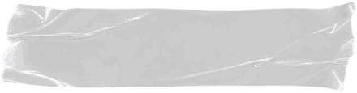
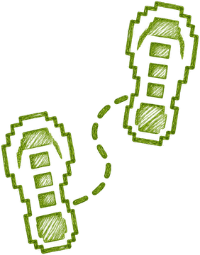
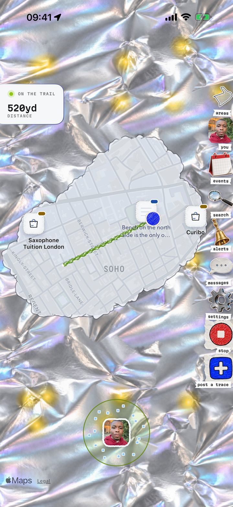
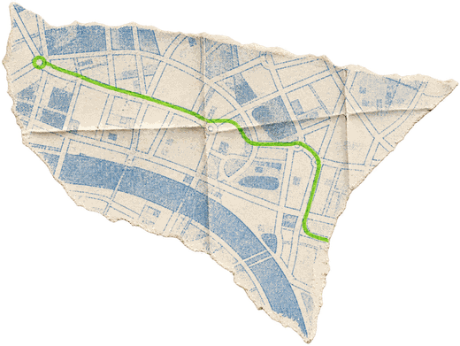
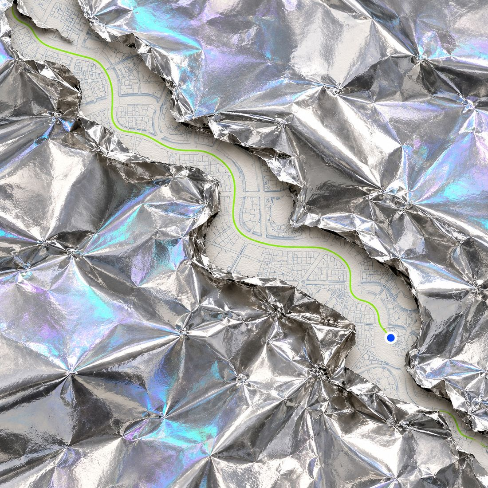
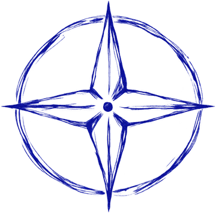
The idea
Everything on GoBe is somewhere. You find it by going there.
Every trace is pinned to the spot it was left. Your map starts under fog and you clear it on foot. Cross paths with someone and, if you've both said yes, GoBe tells you.
you have to go outside to cut through it.How it works
Walk. Leave a trace. Go and find one.
That's the whole app. Everything you see on the map was left by someone who stood there.
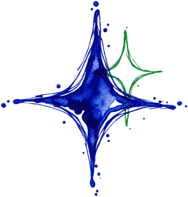
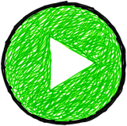
Press play and walk
GoBe draws your route as a trail and the fog lifts behind you. The ground you clear stays clear all day.
Leave a trace
Write a line, snap a photo or film something. Your trace sits on the spot for whoever comes along next.
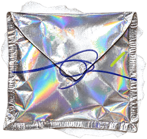
Go there to read it
Traces further off glow under the fog. Walk up to one and it opens. You have to turn up.
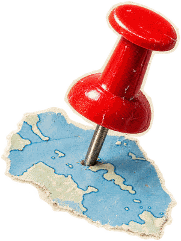
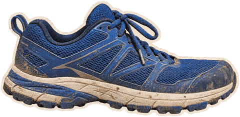
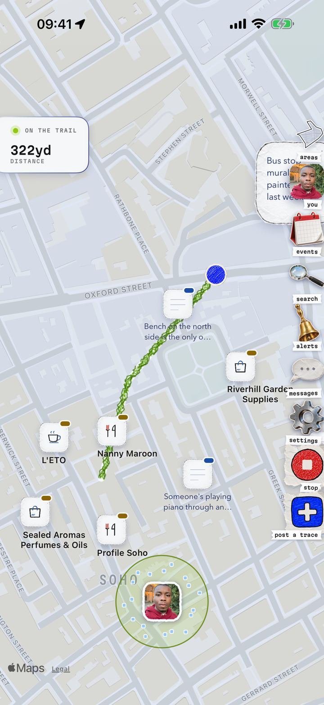
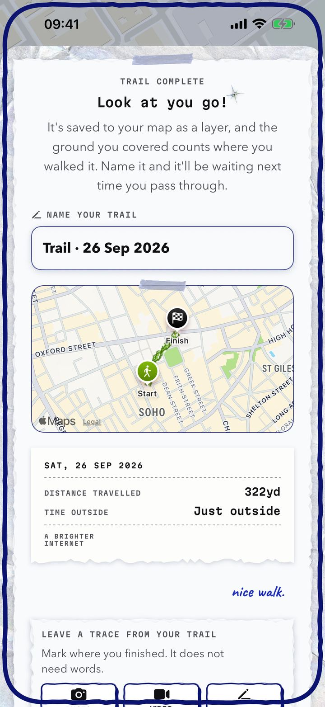
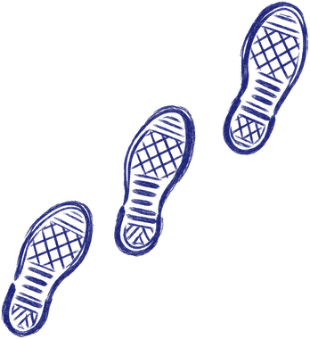
Trails
Press it again to keep it.
A trail records your route while you walk, for up to twelve hours. Press stop and you keep the lot: the line you walked, how far you went, how long you were outside and every trace you left on the way.
Switch location off halfway and GoBe bins the trail. A trail is a real walk, start to finish.
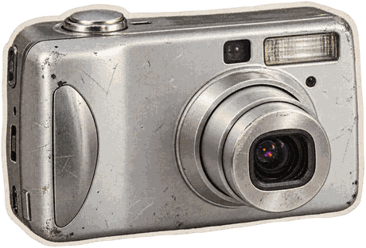
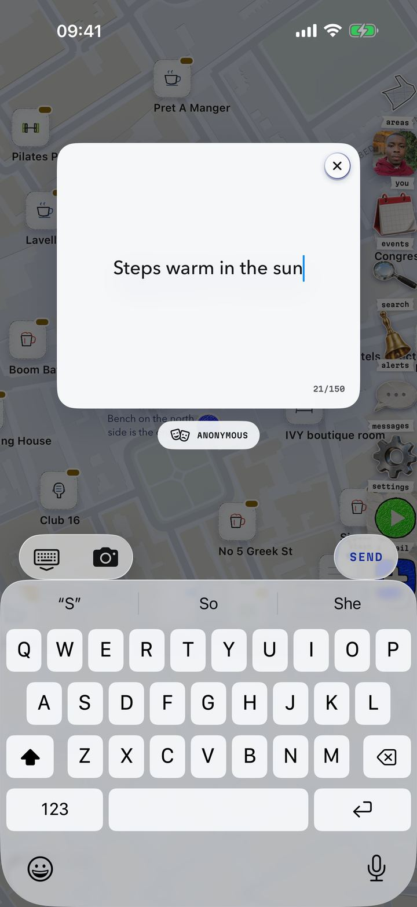
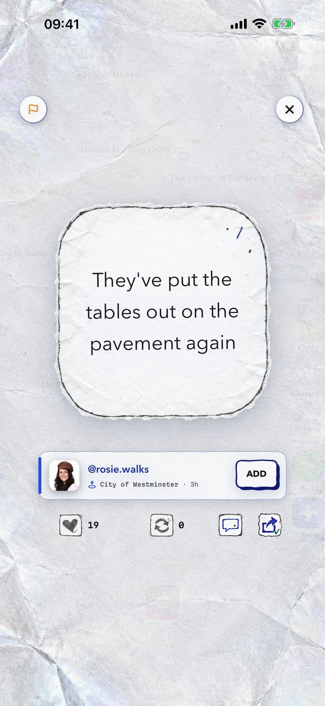
Traces
Leave a trace where you stood.
Write something: a tip, a thought, whatever's going on here. Or snap a photo. Whoever gets to that spot can read it, like it, comment and retrace it onto their own map.
The more people like it, the further it reaches. Your street, written by the people on it.
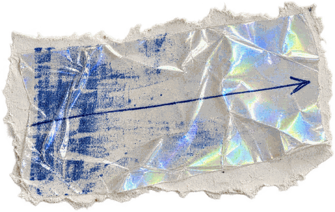
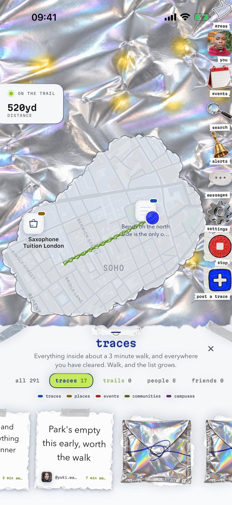
Sealed
Anything past a short walk stays sealed.
On the map it glows under the fog in its own colour: blue for a trace, yellow for a place, green for a community. In the drawer it comes wrapped in foil.
Tap it and GoBe tells you how many minutes away it is. Walk there and it opens.
Who left it and what it says: that's what the walk is for.
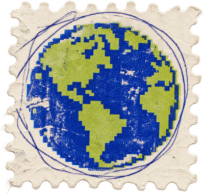
Who's around
You meet the people who walk your streets.
Everyone whose traces you can read has stood where you're standing. The streets decide who you run into.
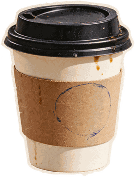
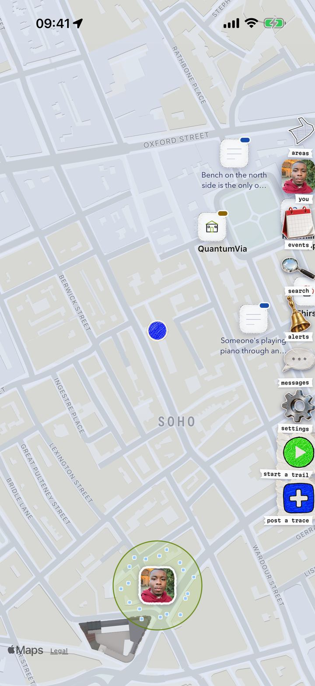
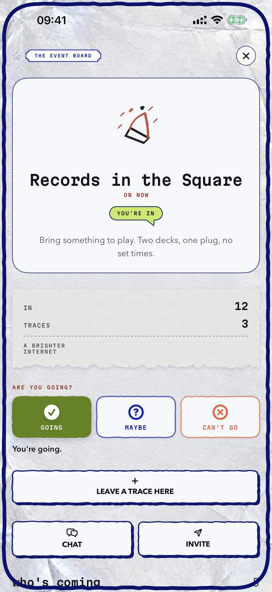
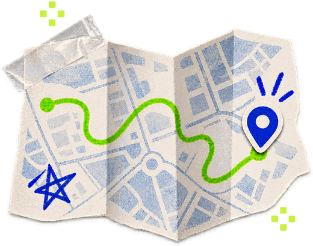
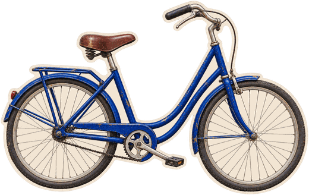
What's around you
Everything round here lives on the map.
Places to eat, drink, read, train and shop sit between the traces. Communities and events are pinned where they meet.
Say you're going, turn up, and leave a trace while you're there.
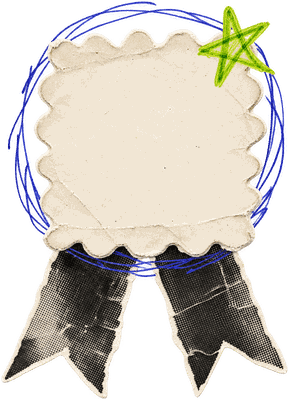
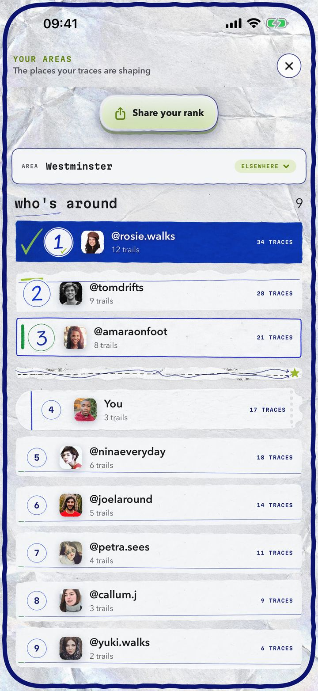
Your ground
Tap it and see how you rank.
Every trail and trace counts towards your neighbourhood, your borough and your city. The board shows who's around and who has left the most.
Get out more, climb higher. The map of a place is made by the people who walk it.
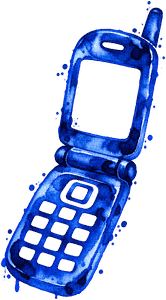
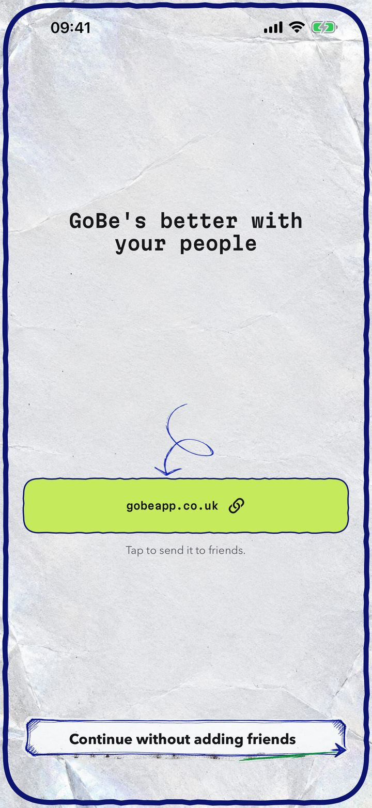
Friends
GoBe's better with your people.
Send your invite link. A friend who joins with it gets points on their GoBe Score straight away, and you get yours when they leave their first trace.
A feed, and GoBe
A feed keeps you scrolling. GoBe gets you out.
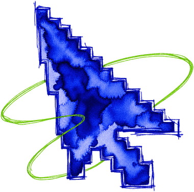
A feed
Keeps you in
- An algorithm picks what you see
- Posts from everywhere, all at once
- Built to keep you scrolling
- Ends on the screen
GoBe
Gets you out
- Distance decides what you see
- What was left here, for whoever gets here
- Built to get you somewhere
- Ends outside, round here, with people from here
Privacy
Your exact location stays off the map.
A map of real places has to keep people safe at them. Here's how GoBe does it.
Traces are saved to a rough spot on a grid about thirty metres across. The exact point is never stored, on your phone or on our servers.
Trails are more precise, so trails stay private to you.
Mark home, work or anywhere else as protected and GoBe keeps traces out of it. Protected areas stay on your phone.
GoBe is free, carries no ads and never sells your data. The detail is in the Privacy Policy.
Nothing to pay and no ads.
We never sell it. Delete your account and everything in it whenever you like.
An independent app, made in Britain.
Younger users start on stricter privacy settings.
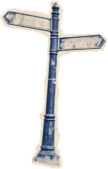
For investors, partners and press
The short version.
Social networks got very good at keeping people on their phones. GoBe is built to get them out of the house. You post by standing somewhere, you see what's near you, and the app is working when somebody goes out.
The map is the moat. It's filled in street by street by the people who walk them, it can't be copied into another city, and every trace makes it more useful to everyone nearby. GoBe grows the way a place does, one street at a time.
Investors, partners and press: contact@gobeapp.co.uk
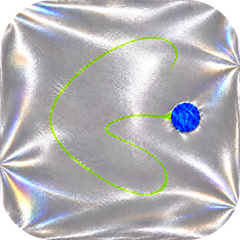
See you out there.
GoBe is free on the App Store for iPhone.